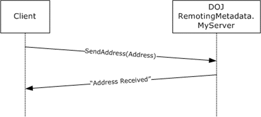

二进制序列化是公司内部自研微服务框架的主要的数据传输处理方式，但是普通的开发人员对于二进制的学习和了解并不深入，容易导致使用过程中出现了问题却没有分析解决的思路。本文从一次生产环境的事故引入这个话题，通过对于事故的分析过程，探讨了平时没有关注到的一些技术要点。二进制序列化结果并不像Json序列化一样具备良好的可读性，对于序列化的结果大多数人并不了解，因此本文最后通过实际的例子，对照MSDN的文档对于序列化结果进行详细解析，并意图通过本次分析对于二进制序列化的结果有直观和深入的认识。
某天晚上突发了一批预警，当时的场景：
A：B，帮忙看下你们的服务，我这里预警了
B：我刚发布了一个补丁，跟我有关？
A：我这里没有发布，当然有关系了，赶紧回退！
B：我这里又没改你们用到的接口，为啥是我们回退？
A：那怪我喽，我这里又没发布过东西，赶紧回退！
B：这个接口很长时间没有改过，肯定是你们自己的问题。
A：不管谁的问题，咱们先回退看看。
B：行吧，稍等下
发布助手：回退中……（回退后预警消失）
A：……
B：……
虽然事故发生后通过回退补丁解决了当时的问题，但是事后对于问题的分析一直进行到了深夜。
因为这次事故虽然解决起来简单，但是直接挑战了我们对于服务的认识，如果不查找到根本原因，后续的工作难以放心的开展。
以前我们对于服务的认识简单归纳为：
增加属性不会导致客户端反序列化的失败。
但是，这个并非是官方的说法，只是开发人员在使用过程中通过实际使用总结出来的规律。经验的总结往往缺乏理论的支持，在遇到问题的时候便一筹莫展。
发生问题时，客户端捕获到的异常堆栈是这样的：
System.Runtime.Serialization.SerializationException
HResult=0x8013150C
Message=ObjectManager 发现链接地址信息的数目无效。这通常表示格式化程序中有问题。
Source=mscorlib
StackTrace:
在 System.Runtime.Serialization.ObjectManager.DoFixups()
在 System.Runtime.Serialization.Formatters.Binary.ObjectReader.Deserialize(HeaderHandler handler, __BinaryParser serParser, Boolean fCheck, Boolean isCrossAppDomain, IMethodCallMessage methodCallMessage)
在 System.Runtime.Serialization.Formatters.Binary.BinaryFormatter.Deserialize(Stream serializationStream, HeaderHandler handler, Boolean fCheck, Boolean isCrossAppDomain, IMethodCallMessage methodCallMessage)
在 System.Runtime.Serialization.Formatters.Binary.BinaryFormatter.Deserialize(Stream serializationStream)通过异常堆栈能够看出是在进行二进制反序列化时发生了异常。通过多方查阅资料，针对此问题的观点基本可以总结为两点：
观点一对于解决当前问题毫无帮助，观点二倒是有些用处，经过了解，当日发布的补丁中涉及的微服务接口并未新增泛型集合属性，而是对于以前增加而未使用的一个泛型集合增加了赋值的逻辑。后来经过测试，确实是由此处改动造成的问题。由此也可以看出，开发人员在日常开发过程中所总结出来的经验有一些局限性，有必要深入的分析下二进制序列化在何种情况下会导致反序列化失败。
为了测试不同的数据类型对于反序列化的影响，针对常用数据类型编写测试方案。本次测试涉及到两个代码解决方案，序列化的程序（简称V1）和反序列化的程序（简称V2）。
测试步骤：
/// <summary>
/// V1测试过程用到的类
/// </summary>
[Serializable]
public class ObjectItem
{
public string TestStr { get; set; }
}
/// <summary>
/// V1测试过程用到的结构体
/// </summary>
[Serializable]
public struct StructItem
{
public string TestStr;
}测试常用数据类型的结果：
| 新增数据类型 | 测试用的数值 | 反序列化是否成功 |
|---|---|---|
| int | 100 | 成功 |
| int[] | {1,100} | 成功 |
| string | "test" | 成功 |
| string[] | {"a","1"} | 成功 |
| double | 1d | 成功 |
| double[] | {1d,2d} | 成功 |
| bool | true | 成功 |
| bool[] | {false,true} | 成功 |
| List<string> | null | 成功 |
| List<string> | {} | 成功 |
| List<string> | {"1","a"} | 成功 |
| List<int> | null | 成功 |
| List<int> | {} | 成功 |
| List<int> | {1,100} | 成功 |
| List<double> | null | 成功 |
| List<double> | {} | 成功 |
| List<double> | {1d,100d} | 成功 |
| List<bool> | null | 成功 |
| List<bool> | {} | 成功 |
| List<bool> | {true,false} | 成功 |
| ObjectItem | null | 成功 |
| ObjectItem | new ObjectItem() | 成功 |
| ObjectItem[] | {} | 成功 |
| ObjectItem{} | {new ObjectItem()} | 失败（当反序列化时客户端没有ObjectItem这个类） |
| ObjectItem{} | {new ObjectItem()} | 成功（当反序列化时客户端有ObjectItem这个类） |
| List<ObjectItem> | null | 成功 |
| List<ObjectItem> | {} | 成功 |
| List<ObjectItem> | {new ObjectItem()} | 失败（当反序列化时客户端没有ObjectItem这个类） |
| List<ObjectItem> | {new ObjectItem()} | 成功（当反序列化时客户端有ObjectItem这个类） |
| StructItem | null | 成功 |
| StructItem | new StructItem() | 成功 |
| List<StructItem> | null | 成功 |
| List<StructItem> | {} | 成功 |
| List<StructItem> | {new StructItem()} | 成功（当反序列化时客户端没有ObjectItem这个类） |
| List<StructItem> | {new StructItem()} | 成功（当反序列化时客户端有ObjectItem这个类） |
测试结果总结：二进制反序列化的时候会自动兼容处理序列化一方新增的数据。但是在个别情况下会出现反序列化的过程中遇到异常的情况。
出现反序列化异常的数据类型：
这两种数据结构并非是一定会导致二进制反序列化报错，而是有一定的条件。泛型集合出现反序列化异常的条件有三个：
数组也是类似的，只有满足上述三个条件的时候，才会导致二进制反序列化失败。这也是为什么之前发布后一直没有问题而对于其中的泛型集合进行赋值后出现微服务客户端报错的原因。
既然通过测试了解到了二进制反序列化确实会有自动的兼容处理机制，那么有必要深入了解下MSDN上对于二进制反序列化的容错机制的理论知识。
二进制反序列化过程中不可避免会遇到序列化与反序列化使用的程序集版本不同的情况，如果强行要求反序列化的一方（比如微服务的客户端）一定要跟序列化的一方（比如微服务的服务端）时时刻刻保持一致在实际应用过程是不现实的。从.NET2.0版本开始，.NET中针对二进制反序列化引入了版本容错机制(Version Tolerant Serialization，简称VTS)。
当使用 BinaryFormatter 时，将启用 VTS 功能。VTS 功能尤其是为应用了 SerializableAttribute 特性的类（包括泛型类型）而启用的。 VTS 允许向这些类添加新字段，而不破坏与该类型其他版本的兼容性。
序列化与反序列化过程中如果遇到客户端与服务端程序集不同的情况下，.NET会尽量的进行兼容，所以平时使用过程中对此基本没有太大的感触，甚至有习以为常的感觉。
要确保版本管理行为正确，修改类型版本时请遵循以下规则：
要确保类型与将来的序列化引擎兼容，请遵循以下准则：
通过前文已经了解了二进制序列化以及版本兼容性的理论知识。接下来有必要对于平时所用的二进制序列化结果进行直观的学习，消除对于二进制序列化结果的陌生感。
目前我们所使用的.NET微服务框架所使用的正是二进制的数据序列化方式。当进行远程调用的过程中，客户端发给服务端的数据到底是什么样子的呢？
引用文档中一个现成的例子(参考资料4)：

上图表示的是客户端远程调用服务端的SendAddress方法，并且发送的是名为Address的类对象，该类有四个属性：(Street = "One Microsoft Way", City = "Redmond", State = "WA" and Zip = "98054") 。服务端回复的是一个字符串“Address Received”。
客户端实际发送的数据如下：
0000 00 01 00 00 00 FF FF FF FF 01 00 00 00 00 00 00 .....ÿÿÿÿ.......
0010 00 15 14 00 00 00 12 0B 53 65 6E 64 41 64 64 72 ........SendAddr
0020 65 73 73 12 6F 44 4F 4A 52 65 6D 6F 74 69 6E 67 ess.oDOJRemoting
0030 4D 65 74 61 64 61 74 61 2E 4D 79 53 65 72 76 65 Metadata.MyServe
0040 72 2C 20 44 4F 4A 52 65 6D 6F 74 69 6E 67 4D 65 r, DOJRemotingMe
0050 74 61 64 61 74 61 2C 20 56 65 72 73 69 6F 6E 3D tadata, Version=
0060 31 2E 30 2E 32 36 32 32 2E 33 31 33 32 36 2C 20 1.0.2622.31326,
0070 43 75 6C 74 75 72 65 3D 6E 65 75 74 72 61 6C 2C Culture=neutral,
0080 20 50 75 62 6C 69 63 4B 65 79 54 6F 6B 65 6E 3D PublicKeyToken=
0090 6E 75 6C 6C 10 01 00 00 00 01 00 00 00 09 02 00 null............
00A0 00 00 0C 03 00 00 00 51 44 4F 4A 52 65 6D 6F 74 .......QDOJRemot
00B0 69 6E 67 4D 65 74 61 64 61 74 61 2C 20 56 65 72 ingMetadata, Ver
00C0 73 69 6F 6E 3D 31 2E 30 2E 32 36 32 32 2E 33 31 sion=1.0.2622.31
00D0 33 32 36 2C 20 43 75 6C 74 75 72 65 3D 6E 65 75 326, Culture=neu
00E0 74 72 61 6C 2C 20 50 75 62 6C 69 63 4B 65 79 54 tral, PublicKeyT
00F0 6F 6B 65 6E 3D 6E 75 6C 6C 05 02 00 00 00 1B 44 oken=null......D
0100 4F 4A 52 65 6D 6F 74 69 6E 67 4D 65 74 61 64 61 OJRemotingMetada
0110 74 61 2E 41 64 64 72 65 73 73 04 00 00 00 06 53 ta.Address.....S
0120 74 72 65 65 74 04 43 69 74 79 05 53 74 61 74 65 treet.City.State
0130 03 5A 69 70 01 01 01 01 03 00 00 00 06 04 00 00 .Zip............
0140 00 11 4F 6E 65 20 4D 69 63 72 6F 73 6F 66 74 20 ..One Microsoft
0150 57 61 79 06 05 00 00 00 07 52 65 64 6D 6F 6E 64 Way......Redmond
0160 06 06 00 00 00 02 57 41 06 07 00 00 00 05 39 38 ......WA......98
0170 30 35 34 0B 054. 上文的数据是二进制的，能看出来序列化后的结果中包含程序集信息，被调用的方法、使用的参数类、属性及各个属性的值等信息。对于上述的序列化后数据进行详细解读的分析可以参考资料4。
对于类对象进行序列化后的结果没有现成的例子，针对此专门设计了一个简单的场景，将序列化后的数据保存到本地文件中。
/// <summary>
/// 自定义序列化对象
/// </summary>
[Serializable]
public class MyObject
{
public bool BoolMember { get; set; }
public int IntMember { get; set; }
}
/// <summary>
/// 程序入口
/// </summary>
class Program
{
static void Main(string[] args)
{
var obj = new MyObject();
obj.BoolMember = true;
obj.IntMember = 10000;
IFormatter formatter = new BinaryFormatter();
Stream stream = new FileStream("data.dat", FileMode.Create, FileAccess.Write, FileShare.None);
formatter.Serialize(stream, obj);
stream.Close();
}
}data.dat中的内容：
0000: 00 01 00 00 00 ff ff ff ff 01 00 00 00 00 00 00 ................
0010: 00 0c 02 00 00 00 4e 42 69 6e 61 72 79 53 65 72 ......NBinarySer
0020: 69 61 6c 69 7a 65 50 72 61 63 74 69 73 65 2c 20 ializePractise,
0030: 56 65 72 73 69 6f 6e 3d 31 2e 30 2e 30 2e 30 2c Version=1.0.0.0,
0040: 20 43 75 6c 74 75 72 65 3d 6e 65 75 74 72 61 6c Culture=neutral
0050: 2c 20 50 75 62 6c 69 63 4b 65 79 54 6f 6b 65 6e , PublicKeyToken
0060: 3d 6e 75 6c 6c 05 01 00 00 00 20 42 69 6e 61 72 =null..... Binar
0070: 79 53 65 72 69 61 6c 69 7a 65 50 72 61 63 74 69 ySerializePracti
0080: 73 65 2e 4d 79 4f 62 6a 65 63 74 02 00 00 00 1b se.MyObject.....
0090: 3c 42 6f 6f 6c 4d 65 6d 62 65 72 3e 6b 5f 5f 42 <BoolMember>k__B
00a0: 61 63 6b 69 6e 67 46 69 65 6c 64 1a 3c 49 6e 74 ackingField.<Int
00b0: 4d 65 6d 62 65 72 3e 6b 5f 5f 42 61 63 6b 69 6e Member>k__Backin
00c0: 67 46 69 65 6c 64 00 00 01 08 02 00 00 00 01 10 gField..........
00d0: 27 00 00 0b '...对于类对象直接进行二进制序列化后的结果与远程调用场景二进制序列化的结构有所不同。
按照[MS-NRBF]所言，序列化后的结果首先是序列化数据头，其中包含RecordTypeEnum、TopId、HeaderId、MajorVersion和MajorVersion。这之后就是被序列化的类的一些信息，包括程序集、类名、属性和属性对应的值。
Binary Serialization Format
SerializationHeaderRecord:
RecordTypeEnum: SerializedStreamHeader (0x00)
TopId: 1 (0x1)
HeaderId: -1 (0xFFFFFFFF)
MajorVersion: 1 (0x1)
MinorVersion: 0 (0x0)
Record Definition:
RecordTypeEnum: SystemClassWithMembers (0x02)
ClassInfo:
ObjectId: (0x4e000000)
LengthPrefixedString:
Length: 78 (0x4e)
String: BinarySerializePractise, Version=1.0.0.0, Culture=neutral, PublicKeyToken=null
ObjectId: (0x00000001)
LengthPrefixedString:
Length: 32 (0x20)
String: BinarySerializePractise.MyObject
MemberCount: 2(0x00000002)
LengthPrefixedString:
Length: 27(0x1b)
String: <BoolMember>k__BackingField
LengthPrefixedString:
Length: 26(0x1a)
String: <IntMember>k__BackingField
ObjectId：0x08010000
Length：0x00000002
Value:1(0x01)
Value:10000(0x00002710)
MessageEnd:
RecordTypeEnum: MessageEnd (0x0b)二进制序列化和反序列化虽然是目前使用的微服务的主要数据处理方式，但是对于开发人员来说这部分内容比较神秘，对于序列化数据和反序列化机制不甚了解。本文中通过一次事故的分析过程，梳理总结了反序列化机制，反序列化兼容性，序列化数据结构等内容，希望通过本文的一些知识，能够消除对于二进制序列化的陌生感，增进对于二进制序列化的深入认识。